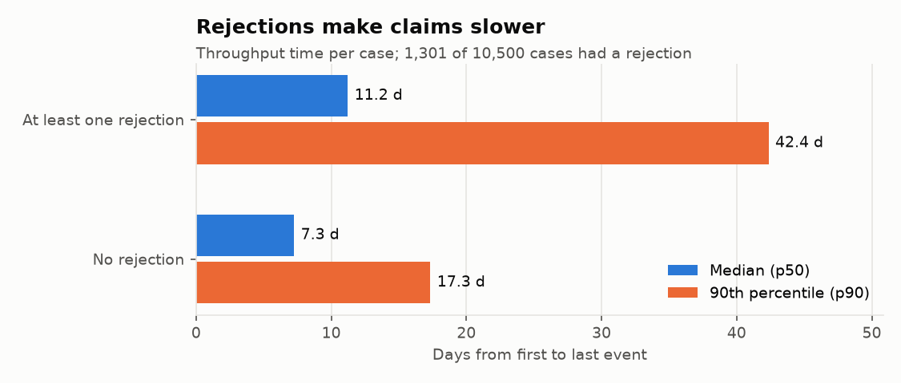
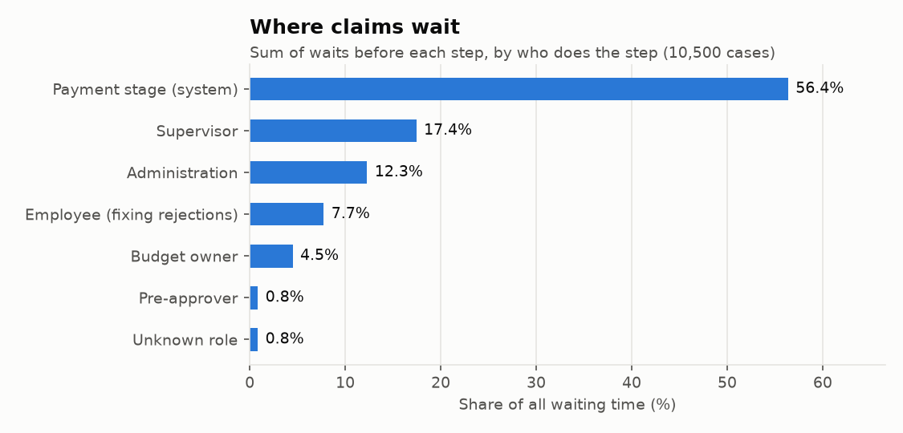
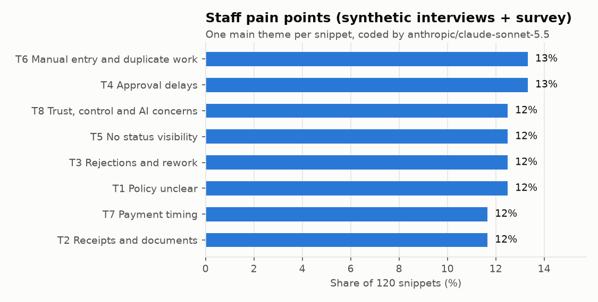
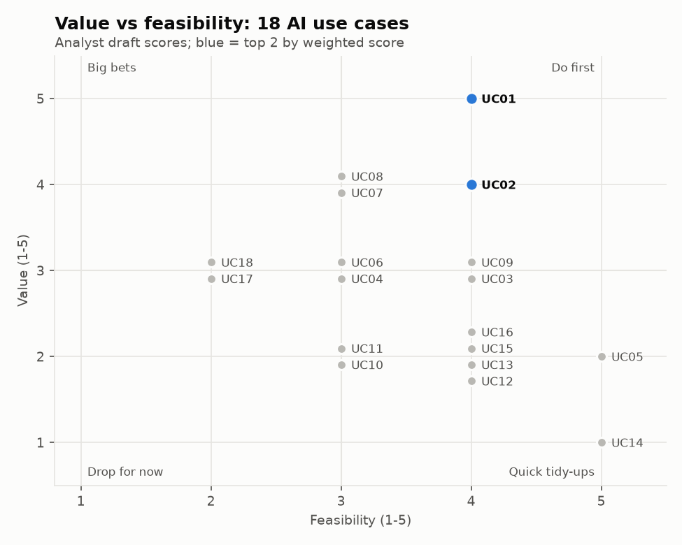
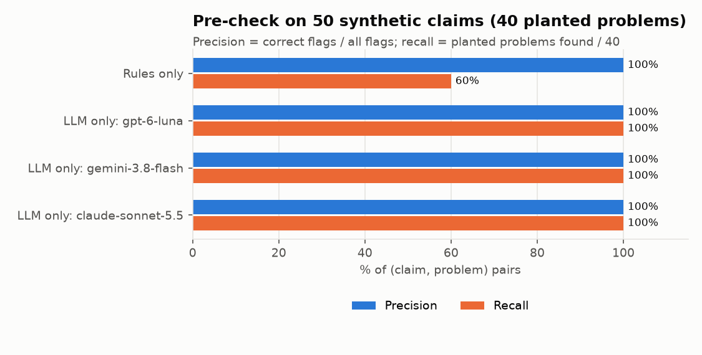
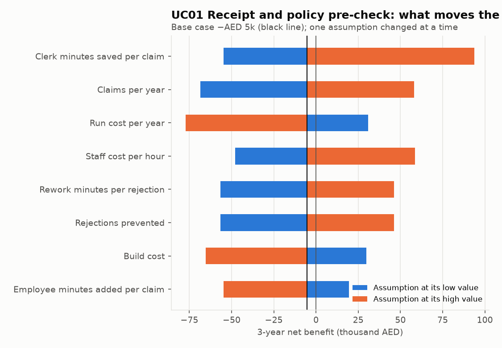

An AI opportunity assessment for Falcon Bay Services LLC (fictional), a 600-person services firm in Dubai
Sara Hebbadj · portfolio case study · process data: a real public event log used as a stand-in for the client (BPI Challenge 2020, 10,500 claims); interviews, survey and claims are synthetic
of claims are rejected at least once. Rejected claims take 11.2 days (median) instead of 7.3.
planted policy problems found by rules + gpt-6-luna on 50 test claims, vs 24/40 for rules alone, at US$0.02 per 100 claims.
of all waiting happens after approval, in the payment stage. That is a process fix (pay daily), not an AI project.

| Measure (10,500 claims, 2017–18) | Value |
|---|---|
| Median / p90 throughput | 7.3 / 20.1 days |
| Claims rejected at least once | 1,301 (12.4%) |
| …of which administration rejected first | 64% |
| Claims resubmitted | 9.7% |
| Different process paths | 99 |
| Claims in 2018 (annual volume used) | 8,260 |
Every number is rebuilt from the raw log by one command; 20 of the calculations are checked against a hand-computed 20-case example (20/20 match).



| # | Use case (analyst draft) | Score |
|---|---|---|
| 1 | UC01 Receipt and policy pre-check before submission | 4.10 |
| 2 | UC02 Approver assistant: reminders plus a one-line claim summary | 4.00 |
| 3 | UC05 Weekly bottleneck report with an AI-written summary | 3.95 |
| 4 | UC03 Arabic/English travel-policy Q&A assistant | 3.70 |
| 5 | UC14 Draft-claim completion nudges | 3.60 |
Weights: value 30%, feasibility 20%, data readiness 20%, risk 15%, time to value 15%.
Robustness: three LLMs scored every use case blind. Rank agreement with the draft: gpt-6-luna ρ = 0.64, gemini-3.8-flash ρ = 0.54, claude-sonnet-5.5 ρ = 0.79. 0 of 3 kept the same top 2.
All three models put UC06 ("where is my claim?" chat) 1st or 2nd; the draft put it 10th because showing the existing status in the portal needs no AI. UC02 fell to 8th–9th for all three. The rubric has no "is AI needed?" criterion: next version adds one. Lowest everywhere: UC18, a fraud score per employee.

| System | Precision | Found | Only in receipt | Per 100 claims |
|---|---|---|---|---|
| Rules only | 100% | 24/40 | 0/16 | US$0.00 |
| LLM only: gpt-6-luna | 100% | 40/40 | 16/16 | US$0.02 |
| LLM only: gemini-3.8-flash | 100% | 40/40 | 16/16 | US$0.15 |
| LLM only: claude-sonnet-5.5 | 100% | 40/40 | 16/16 | US$0.53 |
Rules + each model scored the same as the model alone. All three models hit the ceiling, so this set cannot separate them: the difference is cost (about 34× between the cheapest and the dearest) and speed.
50 synthetic claims, 40 planted problems (24 visible in the form fields, 16 only in the receipt text, some receipts in Arabic). The rules see only the fields by design. Same agent wrote the claims and the rules; one run per model on 8 October 2026.
| Use case | Benefit / year | Net / year | 3-year net | Payback | Break-even |
|---|---|---|---|---|---|
| UC01 pre-check | AED 43k | AED 18k | −AED 5k | no payback in 3 years | 8,601 claims/yr or 42% prevented |
| UC02 approver assistant | AED 80k | AED 65k | AED 156k | 7 months | 0.5 min saved per approval |

| Use case | EU AI Act (benchmark) | Main control |
|---|---|---|
| UC01 pre-check | Minimal risk while advisory | Never rejects; flags go to the employee only |
| UC02 approver assistant | Minimal risk | Summary shows facts, never "approve" |
| UC08 straight-through approval | Borderline (Annex III 4(b) if ML decides) | Not now |
| UC18 fraud score per employee | Likely high-risk (Annex III 4(b)) | Do not build |
| Week | What happens |
|---|---|
| 0 | Baseline rejection rate, data terms, UAE hosting choice, briefing for clerks |
| 1 | Shadow mode: the pre-check runs, staff do not see it; clerks label every flag |
| 2–5 | Live for the pilot group (warnings only); comparison group as today |
| 3 | Checkpoint against the kill criteria |
| 6 | Read-out and go / no-go |
Stop the pilot if (any one):
Owner: finance operations lead · Analyst: Sara · Reviewers: internal audit, IT.